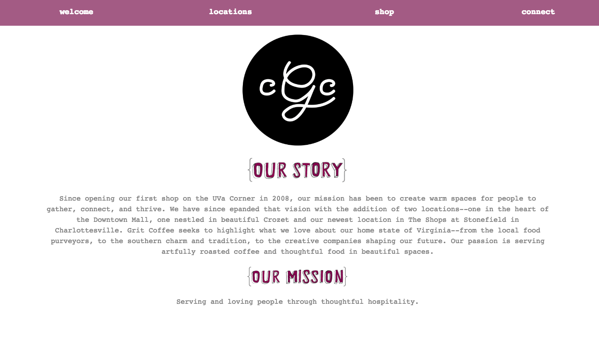

CONCEPT: Grit Coffee Shop
[Charlottesville, VA]
PROJECT: Human-centered redesign of Grit Coffee's website. Special focus on visual design, color and typography. Graphics were hand drawn and then edited on illustrator; the site was coded with basic understanding of HTML and CSS. Images (left) feature the concept for the home page.
RATIONALE: Websites are essential for marketing, branding, and representing a business. I found the current Grit Coffee website to be cluttered with excess text and busy color schemes, which is why I intended to create a minimalistic and clean interface.
IDEAL CONCEPT: Create a website that makes users want to visit again. I aimed to create a website with intentional, memorable design that is easy to navigate.